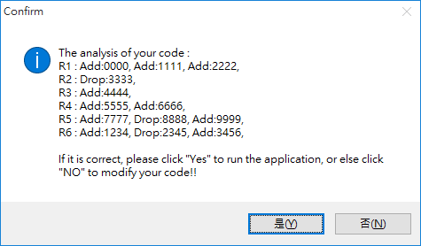

Windows 版本 App 選課程式
在使用此程式前，請先注意以下事項(重要):
- 學號(StuIDNo.) : 輸入你要選課的學號
- 密碼(Password) : 輸入你的"選課專用"密碼
- 顯示密碼(密碼旁核取方塊) : 勾選會顯示出你輸入的密碼以便做確認
- 模式(Mode) : 選課模式分兩種，一般加選(搶課適用)，迴圈加選(沒選到其他時候適用)
- 伺服器(Server) : 選擇想要在中文還是英文版本選課
- 快速重複登入次數(Init Count) : 快速重複登入次數，一般模式選課一次性的功能，使用一般模式選課前預先計算出的驗證碼數量。
此模式為搶課用途，主要功能是在登入前取得多組驗證碼並事先判讀完成，並在開放時前一刻利用已判讀好的驗證碼連續送出登入來達成短時間連續登入的效果，使用此模式總共需要人工操作"2步驟"來完成。
- 先設定好連續重複登入次數(Init Count)，設定數量後按下初始化按鍵(Initilize)計算使用者設定數量的驗證碼。初始化執行的同時可以輸入要選課的代碼在程式內。
- 初始執行完成後設定好您要選的科目按下開始(Start)按鍵即可開始選課。
使用時請務必注意以下事項(重要!!):
- 由於判讀驗證碼需花費一定時間(一個驗證碼約3-5秒)，計算出的驗證碼有時效性必須在一定時間內使用。所以不能設定太多組驗證碼，執行初始化時間也無法太早
- 目前程式無暫停以及取消功能，若輸入錯誤內容按下Start欲取消只能關閉程式再重新開啟。而重新開啟執行必須重新初始化計算登入驗證碼，在按下開始前請謹慎檢查是否輸入有誤請注意!!
- 本說明建議設定以及使用方式為，設定重複登入次數(Init Count)為100次於選課開放前5分鐘按下初始化按鍵，並於選課開放前5秒內按下開始選課鍵最佳。
此模式之間的分隔符號判斷為“>”, “#” ,”,” 和換行來表示 “>” 表示你的選課排順位區隔 “#” 表示要退選此課程，加在4位數代碼前面，請小心使用!! ”,” 和 換行表示區間分開
輸入範例如下:
或是0000>1111>2222,#3333,4444,5555>6666,7777>#8888>9999,1234>#2345>3456
以上2種輸入方式所代表的意思相同，請擇一方法使用 假設 0000,4444,5555,6666,7777 選課人數已滿，電腦執行的方式如下 :0000>1111>2222 #3333 4444 5555>6666 7777>#8888>9999 1234>#2345>3456在按Start開始之前，程式會跳出一個訊息視窗供你確認你所填寫的的要求與他讀取出來的是否為一致(如下圖)
- 加選 0000 (滿，使用備案)
- 加選 1111(成功, 之後備案捨棄直接跳下一區間)
- 退選 3333
- 加選 4444(滿, 無備案直接跳下一區間)
- 加選 5555 (滿，使用備案)
- 加選 6666(滿, 無備案直接跳下一區間)
- 加選 7777(滿，使用備案)
- 退選 8888(退選完後看下一個備案)
- 加選 9999(成功, 之後備案捨棄直接跳下一區間)
- 加選 1234(成功, 之後備案捨棄直接跳下一區間)
- 結束

此模式之間的分隔符號判斷為”,” 和換行來表示 ”,” 和換行表示區隔每個科目代碼 在輸入內請勿加上非上述之外的符號字元(包含空白鍵space)，以免影響程式之判讀!! 輸入範例如下 :電腦會一直對1234,2345,3456這3門課一直重複加選(包含加選超過一定次數強制登出後再自動重新登入)1234,2345,3456
Windows 版本 App 選課程式

淡江大學隨時隨地選課
Our contact method